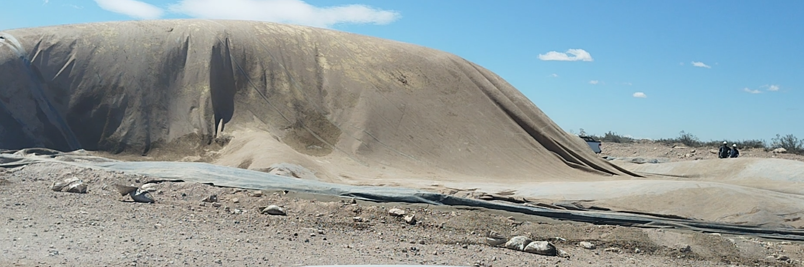
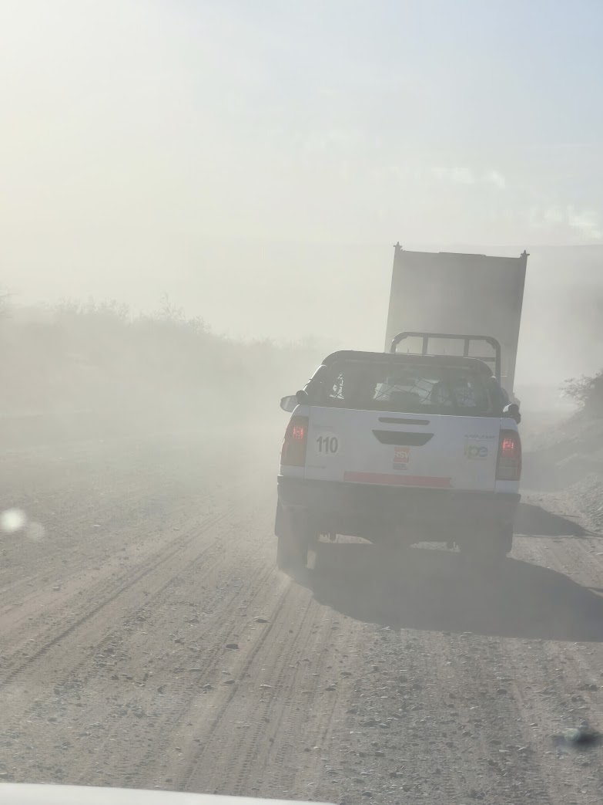
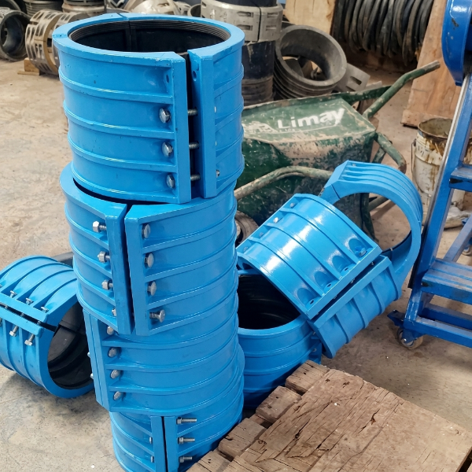
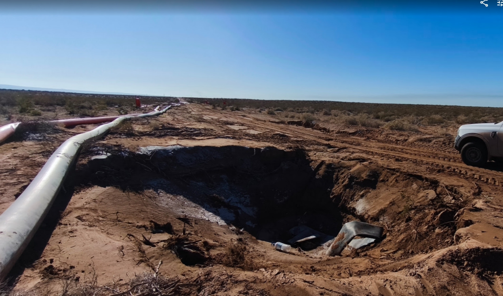

Seguridad Operativa y Respuesta a Emergencias en Yacimiento
En Vaca Muerta, los factores de riesgo convergen de forma simultánea: presiones hidrostáticas superiores a 10.000 psi, coexistencia de múltiples servicios en el mismo pad (*SIMOPS*), hidrocarburos inflamables, sulfhídrico (H₂S), ráfagas de viento Zonda de hasta 100 km/h y distancias de más de una hora de ambulancia hacia los hospitales de cabecera.
3.1 Riesgos Climáticos de la Cuenca Neuquina y Umbrales de Detención
Viento Zonda y ráfagas del oeste · Tormentas eléctricas y riesgo de rayo · Heladas patagónicas e hidratación de gas · Calor extremo en verano · Monitoreo continuo con anemómetro y alertas provinciales.
El clima en la estepa neuquina es implacable y cambia en minutos. El supervisor debe verificar el parte meteorológico oficial antes de autorizar cualquier maniobra con hidrogrúa, izaje de canasta de snubbing o trabajo en altura sobre inyectores de Coiled Tubing.
Matriz de Alertas Climáticas y Umbrales Operativos de Yacimiento
PARADA DE EMERGENCIA| Fenómeno Climático | Temporada Crítica | Umbral de Alerta / Suspensión | Medida Preventiva Innegociable | Impacto en Operaciones Petroleras |
|---|---|---|---|---|
| Viento Zonda / Ráfagas | Mayo a Octubre | > 50 km/h: Alerta y restricción. > 65 km/h: Suspensión total de izajes y altura. |
Medición con anemómetro en punta de pluma; asegurar cargas en suelo; amarrar lonas de tanques. | Vuelco de grúas, caída de operarios en altura y desgarro de geomembranas. |
| Tormenta Eléctrica | Noviembre a Marzo | Rayos a < 16 km: Alerta Amarilla. Rayos a < 8 km: Alerta Roja (Cese total). |
Parar bombeo en piletas abiertas; evacuar personal a cabinas de vehículos cerrados; prohibido tocar fierros. | Descarga atmosférica letal en mástiles, cañerías metálicas y piletas. |
| Heladas y Nieve | Junio a Agosto | Temperaturas < 0°C sostenidas (mínimas de -8°C a -12°C). | Inyección de metanol en líneas de gas; drenaje de agua en bombas inactivas; calefacción en cabinas. | Congelamiento de manifolds, fractura frágil de acero y rotura de manómetros. |
| Calor Extremo | Diciembre a Febrero | Temperaturas > 36°C con radiación directa. | Pausas de hidratación (mínimo 4 L agua por persona/turno); rotación de cuadrillas; sombras habilitadas. | Golpe de calor y desmayos; recalentamiento de motores diésel de fractura. |
| Polvo y Ceguera Vial | Permanente en ripio | Visibilidad < 100 m por polvo en picadas. | Luces bajas encendidas 24 hs; velocidad máx 30-40 km/h; distancia de seguimiento de 100 m. | Choques frontales y vuelcos de tolvas de arena y camionetas 4x4. |

Riesgo de Embolsado de Lona por Ráfagas de Zonda
Efecto de ráfagas de más de 65 km/h en montaje de tanques en Añelo. El viento actúa como vela y puede colapsar las placas perimetrales de acero abulonadas.

Riesgo Vial: Cortinas de Polvo en Picadas Petroleras
Circulación en caminos internos durante el tránsito de bateas de arena y cisternas. Queda terminantemente prohibido el sobrepaso a ciegas.
3.2 Operaciones Simultáneas (SIMOPS) y Zonas Rojas de Alta Presión
Coexistencia de servicios en pad multiequipo · Matriz de interferencia operativa · Delimitación física de Zonas Rojas · Coordinación entre supervisores y Company Man.
En un pad de shale moderno de 4 a 8 pozos conviven la unidad de Fractura bombeando a 10.000 psi en el Pozo 1, el equipo de Wireline bajando cañones en el Pozo 2 y la cuadrilla de Coiled Tubing moliendo tapones en el Pozo 3. Esta configuración (**SIMOPS**) requiere que ningún supervisor actúe sin coordinar previamente con el responsable general del pad.
Jerarquía de Controles Aplicada a Operaciones Simultáneas en Yacimiento
CONTROL OPERACIONAL| Nivel de Control | Eficacia | Peligro en Locación de Pozo | Medida Técnica Implementada por el Supervisor |
|---|---|---|---|
| 1. Eliminación | 100% Máxima | Descarga atmosférica durante tormenta eléctrica severa. | Detención total del bombeo y evacuación a módulos habitacionales cerrados. |
| 2. Sustitución | Alta | Prueba de estanqueidad de bridas con gas o aire comprimido. | Sustitución por prueba hidrostática con agua y aditivo inhibidor (incompresible, no explosiva). |
| 3. Control de Ingeniería | Moderada/Alta | Desacople violento de manguera de alta presión o brida. | Instalación de cables de retención (*whipchecks*), mallas antilatigazo y válvulas de retención (*check valves*). |
| 4. Control Administrativo | Media | Ingreso inadvertido de personal a la línea de fractura de 10.000 psi. | Delimitación con cadenas rojas, carteles de advertencia, silbato de inicio de presurización y PTS específico. |
| 5. EPP | Última Barrera | Nivel de ruido de 105 dBA en cercanía del set de bombas. | Uso obligatorio de doble protección auditiva (tapón endoaural + protector de copa tipo vincha). |

Dispositivos de Contención y Reparación Rápida
Grapas modulares de aluminio con junta NBR para control de fugas en líneas de alimentación sin desarmar el tendido.

Consecuencias de Pérdida de Contención en Alta Presión
Socavamiento del terraplén y daño estructural al camino por un chorro presurizado no detectado a tiempo.
3.3 Sistemas de Parada de Emergencia (ESD) y Despresurización
Botoneras ESD de campo · Desconexión rápida de unidades motrices · Alivio de presión hacia antorcha o tanque de quema · Conteo en puntos de reunión (*Muster Point*).
3.4 Atención Médica en Zonas Remotas y Botiquín de Trauma
Los primeros 10 minutos (la hora de oro) · Manejo del Desfibrilador Externo Automático (DEA) · Control de hemorragias exanguinantes con torniquete CAT · Red de derivación de Añelo y Neuquén Capital.
Dotación Obligatoria del Botiquín de Trauma y Rescate para Zonas Remotas
INVENTARIO OBLIGATORIO| Insumo / Dispositivo | Función Operativa en Emergencia | Ubicación en el Pad | Criterio de Verificación Mensual |
|---|---|---|---|
| Desfibrilador Externo (DEA) | Reversión de fibrilación ventricular por electrocución o paro cardíaco repentino. | Tráiler del supervisor y campamento central. | Luz verde de autotest encendida; parches adultos sin vencer. |
| Torniquete Táctico Militar (CAT) | Detención inmediata de hemorragias arteriales severas por atrapamiento mecánico. | En todo botiquín de camioneta 4x4 y sala de bombas. | Molinete intacto en su empaque hermético sellado. |
| Tabla Espinal Larga + Collarín | Inmovilización y extracción de víctimas de caídas de altura o choques viales. | Frente al punto de primeros auxilios del pad. | Cintas tipo araña completas y collarín cervical regulable. |
| Mantas Térmicas Aluminizadas | Aislamiento contra la hipotermia nocturna patagónica tras shock traumático. | Mínimo 4 unidades por camioneta de guardia. | Pliegue cerrado impermeable. |
| Frasco Lavaojos Estéril | Lavado ocular de emergencia ante salpicaduras de salmuera, químicos o arena. | Junto a la batea de químicos y bombas de cementación. | Precinto de fábrica sin abrir con solución al 0,9%. |
Red de Derivación Hospitalaria y Tiempos de Traslado en Vaca Muerta
PLAN MEDEVAC| Centro Asistencial | Nivel de Complejidad | Distancia Promedio desde Bloques | Tiempo Estimado Terrestre | Vía de Comunicación Primaria |
|---|---|---|---|---|
| Hospital Dr. Horacio Heller (Añelo) | Nivel III (Shock room, estabilización, ambulancia 4x4) | 20 a 50 km | 25 a 45 minutos | VHF Canal Médico / Guardia 107 |
| Hospital Rincón de los Sauces | Nivel IV (Quirófano básico, traumatología) | 40 a 80 km | 45 a 80 minutos | Teléfono de guardia: (0299) 496-1234 |
| Clínica Petroleros (Plaza Huincul) | Nivel VI (Terapia intensiva polivalente, cirugía) | 90 km | 1 hora 15 minutos | Central de Emergencias ART Petroleros |
| Hospital Provincial Castro Rendón (Neuquén) | Nivel VIII (Máximo trauma provincial, helipuerto sanitario) | 110 a 140 km | 1h 45m (terrestre) / 25m (helicóptero) | Defensa Civil Provincial: 103 |
Test Evaluativo Interactivo · Nivel 3
Evaluá tu capacidad de respuesta ante viento Zonda, tormentas eléctricas, paradas ESD, H₂S y emergencias médicas en yacimiento. Hacé clic en la opción que consideres correcta.
Evaluación de Competencias · Nivel 3 (5 Preguntas)
MÍNIMO APROBATORIO: 80% (4 de 5)* Respondé las 5 preguntas para habilitar tu puntaje.